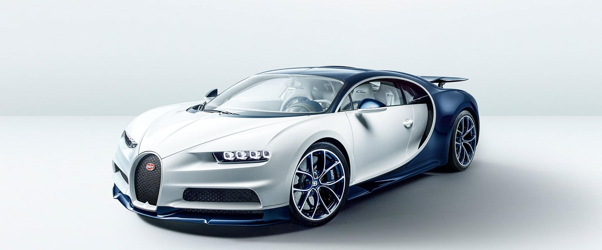
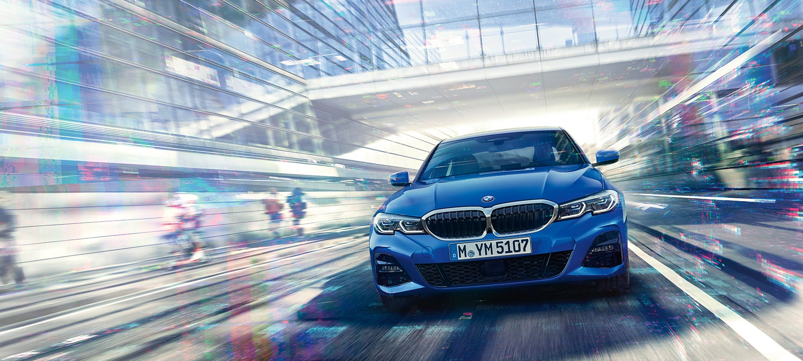
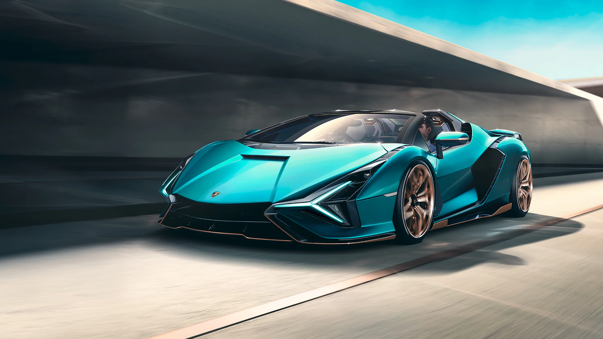

Bugatti

Mobil Ettore Bugatti adalah mobil Prancis produsen dari mobil
kinerja tinggi, yang didirikan pada tahun 1909 . Mobil Bugatti yang
dikenal karena keindahan desain mereka (Ettore Bugatti adalah dari
keluarga seniman dan menganggap dirinya untuk menjadi seorang
seniman dan konstruktor) dan untuk banyak kemenangan ras mereka.
termasuk Type 35 Grand, Type 41 "Royale", Type 57 "Atlantic" danType
55 mobil sport.
Ettore Bugatti tahun 1947 terbukti menjadi akhir bagi marque, dan
kematian putranya Jean Bugatti tahun 1939 dipastikan tidak ada
pengganti untuk memimpin pabrik. Tidak lebih dari sekitar 8000 mobil
yang dibuat. Perusahaan berjuang secara finansial, dan merilis satu
model terakhir pada 1950-an, sebelum akhirnya dibeli untuk bisnis
bagian pesawat pada tahun 1960-an. Pada 1990-an, seorang pengusaha
Italia dihidupkan kembali sebagai pembangun produksi terbatas
eksklusif mobil sport . Saat ini, nama ini dimiliki oleh kelompok
manufaktur mobil Jerman Volkswagen .
Ferrari

Ferrari adalah sebuah produsen mobil super dan mobil balap asal
Italia berperforma tinggi yang berbasis di Maranello, Italia.
Ferrari didirikan oleh Enzo Ferrari pada tahun 1929, sebagai
"Scuderia Ferrari", perusahaan yang mensponsori para pembalap dan
membuat mobil balap sebelum pindah ke produksi kendaraan komersial
yang dikenali sebagai Ferrari pada tahun 1947. Sejarahnya,
perusahaan ini telah berpartisipasi paling lama dalam dunia balap,
terutama di Formula Satu, di mana telah sukses besar. Perusahaan ini
kemudian juga mengembangkan produksi mobil independen pada 1946, dan
kemudian menjadi Ferrari S.p.A., dan sekarang dikuasai oleh grup
Fiat. Perusahaan ini bermarkas di Maranello, dekat Modena, Italia.
Ferrari juga ikut serta dalam kompetisi Formula Satu. Salah satu
pembalapnya yang terkenal adalah juara dunia tujuh kali asal Jerman,
Michael Schumacher.Di Indonesia, Ferrari dimiliki oleh PT Citra
Langgeng Otomotif.
BMW

BMW (singkatan untuk Bayerische Motoren Werke, atau dalam Bahasa
Inggris, Bavarian Motor Works), adalah sebuah perusahaan otomotif
Jerman yang memproduksi mobil dan sepeda motor. BMW didirikan pada
tahun 1916 oleh Franz Josef Popp. BMW AG adalah perusahaan induk
dari merk mobil MINI dan Rolls-Royce, dan, dulunya Rover. BMW
dikenal sebagai salah satu perusahaan mobil mewah dengan performa
tinggi, dan juga salah satu perusahaan mobil pertama yang
menggunakan teknologi ABS.
BMW mengawali bisnisnya setelah
restrukturisasi dari perusahaan pembuat mesin pesawat terbang Rapp
Motorenwerke tahun 1917. Akhir dari Perang Dunia I tahun 1918, BMW
dipaksa untuk berhenti memproduksi mesin pesawat terbang karena
adanya Perjanjian Versailles.Perusahaan ini beralih untuk
memproduksi sepeda motor tahun 1923 setelah perjanjian itu mulai
dilonggarkan, dan mulai memproduksi mobil tahun 1928/29. Tahun 1992,
BMW mengakuisisi perusahaan studio desain industri di California
DesignworksUSA, dan mengakuisisi penuh tahun 1995. Tahun 1994, BMW
membeli perusahaan otomotif Inggris Grup Rover (di mana pada saat
itu ada merek Rover, Land Rover dan MG dan juga hak atas merek yang
sudah tidak lagi diproduksi yaitu Austin dan Morris) dan memilikinya
selama 6 tahun. Tahun 2000, Rover mengalami kerugian besar dan BMW
pun menjualnya. Merek MG dan Rover dijual ke Phoenix Consortium
untuk membentuk MG Rover, sedangkan Land Rover diambil alih Ford.
BMW akhirnya mendirikan merek sendiri yang ia namai MINI, yang
diluncurkan tahun 2001.
Lamborghini

Automobili-Lamborghini S.p.A., sering disebut Lamborghini adalah
sebuah pembuat mobil di Italia. Perusahaan ini didirikan oleh
Ferruccio Lamborghini pada tahun 1963, dengan tujuan untuk
menghasilkan mobil grand wisata yang dapat bersaing dengan mobil
yang telah ada dipasaran terlebih dahulu seperti Ferrari. Model
pertama perusahaan Lamborghini dirilis pada pertengahan tahun 1960,
kemudian dicatat untuk perbaikan, kekuasaan, dan kenyamanan.
Lamborghini mendapat banyak pujian pada tahun 1966. Setelah beberapa
dekade, masa sulit menimpa perusahaan di pertengahan tahun 1970-an,
seperti penjualan anjlok karena krisis moneter dunia 1973 dan krisis
minyak. Setelah melewati masa kebangkrutan dan tiga kali perubahan
kepemilikan, Lamborghini menjadi anak perusahaan dari Chrysler pada
tahun 1987. Kurangnya keberhasilan Lamborghini terus berlanjut
sampai tahun 1990-an, sampai perusahaan itu dijual pada tahun 1998
kepada Audi, anak perusahaan dari Grup Volkswagen, sebuah Perusahaan
otomotif Jerman. Kepemilikan Audi menandai awal dari sebuah periode
stabilitas dan peningkatan produktivitas untuk Lamborghini, dengan
penjualan meningkat hampir sepuluh kali lipat selama tahun 2000-an,
memuncak pada rekor penjualan pada tahun 2007 dan 2008. krisis
moneter dunia pada akhir tahun 2000-an berdampak negatif terhadap
pembuat mobil mewah di seluruh dunia, dan melihat penjualan
Lamborghini turun kembali ke tingkat pra-2006.